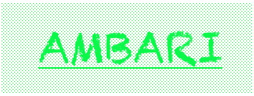

Hortonworks Data Platform
Dashboard
HDFS
MapReduce
HBase
Post Feedback
Documentation
Nagios
Ganglia
HBase Service
Service
State
Critical
Warning
HBase Summary
Version
HBase Master
Region Server Count (live/dead)
Regions in Transition
Master Started
Master Activated
Average Load (regions per regionServer)
Master Heap (used/max)
Quick Links:
HBase Master
HBase Logs
Zookeeper Info
Advanced Links:
HBase Master JMX
Debug Dump
Thread Stacks
Service Graphs